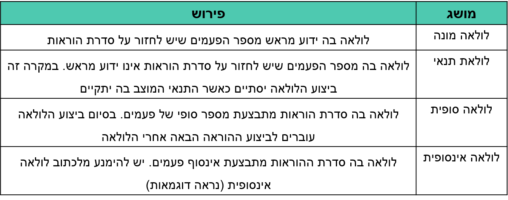
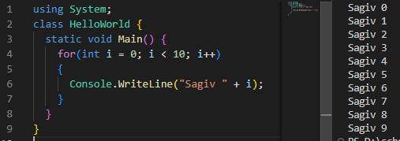
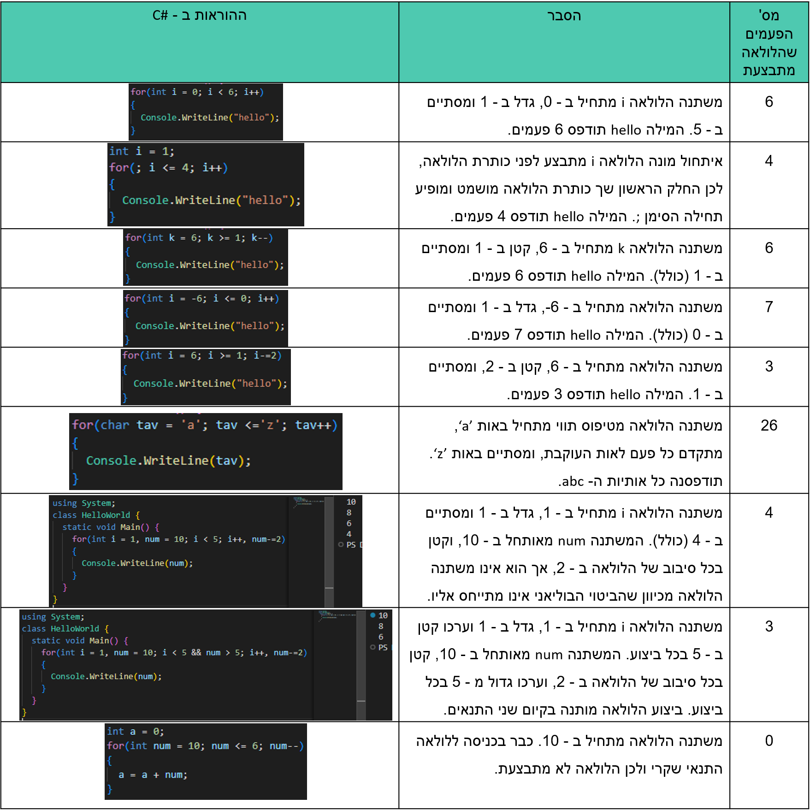

?מה זה לולאה
.לולאה: ביצוע חוזר של פעולות
.נשתמש בלולאה כשנרצה לבצע פעולה/פעולות כמה פעמים במהלך הריצה
.while ולולאת for בעיקרון בסי שארפ יש 4 לולאות, אני ארחיב יותר לעומק על 2, לולאת

.כאן הלולאה פותרת את הבעיה ,Sagiv נגיד ונרצה להדפיס למסך 100 פעמים את השם
for לולאת

.במקרה זה, הלולאה היא לולאת מונה וסופית
.i ולאחר מכן את הערך של Sagiv הדפסנו את השם
,תחילה הגדרנו משתנה שעליו נרוץ בלולאה, מיד אחר כך כתבנו תנאי
.ב - 1 על מנת שלא נכנס ללואה אינסופית i ולבסוף הגדלנו את
.כשהתנאי לא מתקיים הלולאה נעצרת
!עשר פעמים, אבל התחלנו מאפס, ולכן לא הגענו למספר עשר i הדפסנו את הערך של

...בספר כתבו מונה, צובר, כופל
:אני לא ארחיב יותר מידי כאן אני רק אסביר מה כל אחד עושה
.for בתיקייה הבאה תוכלו למצוא דוגמה לשימוש בלולאת התיקייה